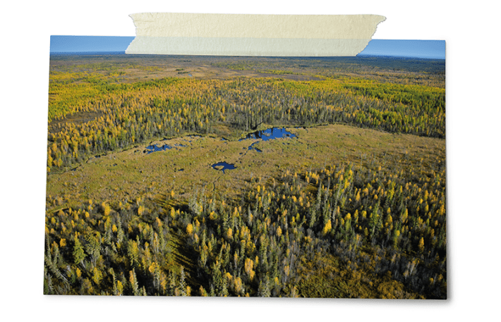
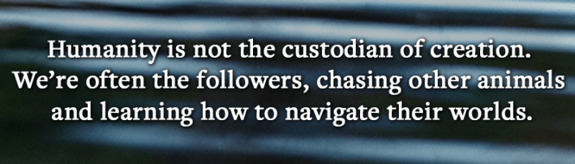
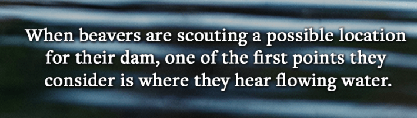

Gazing out the left-hand side of our boat, I caught my first glimpse of the rugged eastern perimeter of Wood Buffalo National Park in Alberta, Canada—a land saturated in superlatives.
Beyond the imposing stockade of white spruce and balsam, North America’s most expansive protected wilderness zone is filled with dense peat bogs called muskeg—a seemingly endless quilt of stagnant pools, waterlogged vegetation, and organic material in various states of decomposition. This malleable landscape, created through the retreat of melting glaciers, is virtually impassable by humans, but provides ideal conditions for other species to build on. A visiting Frommer’s writer once remarked, “Most of the animals here could easily live their entire lives without knowing humanity exists.”
Gifted with abundant resources and near-limitless freedom of action, the park’s residents have wide latitude to create the world they wish to inhabit. Around 1990, this freedom empowered a small number of beavers to create an entirely new pond. That purpose-built body of water would soon be expanded to 2,700 feet across—the length of nine football fields—with offshoots branching deep into the surrounding woods. At its center, a hardy lodge was constructed, from which the newly established territory would be vigorously maintained and defended.
Read more: “The Groundhog Watchers”
It would be 17 more years before humans even noticed.
Settlements are commonly understood to be places of fixed inhabitation, often motivated by a strategic location, perceived absence of safety threats, or proximity to natural resources. It’s a fraught term frequently hurled at those seen as invaders, but at its most basic level, a settlement is simply a place where at least one person lives.
Yet despite beavers and other nonhuman animals having individualpersonalities, we have not historically viewed them as persons capable of physically occupying a place. When kindergartners are taught about the difference between a person (their teacher), a place (their classroom), and a thing (their desk), it’s generally left unsaid which category animals fit into. As a result, settlements are broadly assumed to be beyond their capacity.

DAM, THAT’S BIG: A satellite image of the world’s largest beaver dam, in Wood Buffalo National Park in Alberta, Canada. Its total surface area is more than 17 acres, and the pond formed by a beaver dam is about 3.3 feet deep, which means it contains approximately 18,500,000 gallons of water. Photo courtesy of Parks Canada.
When humans decide whether to settle in a new place, we often take some basic criteria into account. Will we have reliable sources of food and water? What are the limits to how far we can travel? Perhaps a different group of humans (or other animals) lives nearby that we know to be aggressive. Are the risks of raising our family near that potential threat outweighed by the advantages this area provides to us? And if we do decide to stay, who’s going to do what to make sure that our community thrives?
These are manifestations of what philosophers refer to as worlding—the process of creating one’s own world. It involves a series of steps, such as identifying landmarks, drawing spatial boundaries, assessing the ecological context and vital contributions others are making to it, and establishing our interactions with the fabrics of the planet, which collectively form the world as a group of individuals understands it. These life-sustaining practices continually shape and reshape the narratives and mental maps we carry with us everywhere we go—and a growing number of experts now believe humans are not alone in enacting this process.
“Surely there has to be a way for all animals to consistently sustain and reproduce themselves, behave predictably, and all of the things that we really want to do when we make worlds,” says Greg Anderson, a historian of ancient human civilizations at Ohio State University.

“World-building may be easier to see when humans or other animals gather in large numbers or organize themselves in a highly coordinated way like an ant colony,” Anderson continues. “But even in cases like a wolf pack, they have their own model of the world. They live in small, nuclear-type families, so their world might look pretty limited to us, but certainly it would involve paths here and there, and rewards that will be found in certain reliable locations. They have to understand what keeps a wolf alive, how and where to reproduce, and what sustenance can be gained by following a particular practice.”
Meg Crofoot, an evolutionary anthropologist at the Max Planck Institute of Animal Behavior, agrees. “All animals have a clear investment in the landscape, even if they’re not changing it as dramatically as a beaver or an elephant might. Locations that have particular importance, or that relay information exclusive to that place. That information is inherently valuable because it provides security and helps animals to make sense of the world as they see it.”
To skeptical audiences quick to brush off such comparisons as anthropomorphism run amok, Anderson reminds people that they have it exactly backward. “Humans are animals too, and we engage in the same classic worlding behaviors that help all species understand their environments, adapt, and survive. Humanity is not the custodian of creation. Indeed, we’re often the followers, chasing other animals and learning how to navigate their worlds, which we then think of as our own.”
When beavers are scouting a possible location for their dam, one of the first points they consider is where they hear flowing water. Gentle creeks and rivers are more appealing than, say, white-water rapids, which would swiftly overpower them. Given the choice, beavers are partial to places just downstream from plateaus and foothills, because in the springtime, snowmelt from higher elevations brings with it huge bounties of runoff sediment, mud, and sticks. For a beaver, that’s like having their groceries and home-maintenance supplies delivered to their doorstep.
Once a suitable location has been selected, construction can begin in earnest. Aided by up to a half dozen family members, the beavers will harvest branches and logs from the surrounding forest under cover of nightfall, carrying and shoving them one by one into the floor of mud and rock. This structure is then interwoven by a dense mesh of twigs and vegetation, which plugs holes and creates a solid barricade capable of retaining water and flooding the landscape. This hydro-engineered beaver pond forms the foundation of their world.
As the water rises, the beavers will select a spot, usually in the center of the pond, to build a lodge. The water around the lodge has to be deep enough to form a moat, providing defensible space from predators who might wish them or their family harm. Made of branches and mud, these domed structures will ultimately serve as their primary housing, complete with secret tunnels, underwater doorways, and several interior chambers for living and sleeping.

Beavers don’t hibernate, preferring instead to spend autumn as many human settlers do: cutting and storing wood in anticipation of leaner times. Food is also stockpiled underwater near their lodge, so that even when the pond freezes over in the depths of winter, they can swim out and grab a quick bite to eat. Sometimes a second den will be created on the riverbank, just to have options.
Equally important to the beavers’ survival is the creation of an intricate maze of navigable canals, which can extend hundreds of feet into the surrounding forest. Wood is much easier to drag in water than on land, so these channels create glide paths to replenish their supplies. Such infrastructure is largely invisible on modern-day maps because canals have historically been equated only with human-made creations. From a cartographer’s perspective, animal-made canals may as well have been birthed by nature itself, like a creek, when in reality both versions were painstakingly dug with transit in mind.
If the beavers’ efforts are successful, the result is a secure year-round homestead for their family. A living testament to the fact that for many animals, home is a place created, not found.
While beavers are perhaps the most visible example of nonhuman animals engineering the physical world to their liking, they are not alone.
Read more: “The Termite and the Architect”
Muskrats commonly build lodges similar to those of beavers, but with foot-thick walls made of grasses and wetland plants instead of sticks. Indeed, muskrats will often tag along when beavers reengineer a landscape, joining other temporary or permanent pond residents like frogs and insects to create a sort of multispecies neighborhood.
In Central Africa, goliath frogs—the world’s largest, weighing up to seven pounds—have similarly been found to push gravel and stones around to dam waterways and create peaceful ponds where their eggs and tadpoles will be safe from predators and rising water levels. Cathedral termites in Australia build mounds more than 15 feet tall, which, relative to their individual size, makes their buildings significantly larger than humanity’s tallest skyscraper is to us. Gopher tortoises dig burrows that can stretch more than 50 feet long, at depths of two dozen feet below the earth’s surface. And in the Kalahari Desert, sociable weaver birds construct enormous haystack-looking communal nests made of stiff grasses and a twig-and-turf roof, which can house up to 400 residents and contain up to 100 individual rooms. White-browed sparrow weavers, by contrast, work together to construct non-communal nests, where they roost individually and breed. Research published in Science shows that their nests are all built according to the distinctive style of their cultural group, but each of which has its own architectural traditions.
Once built, animal constructions can last a remarkably long time. When researchers took a fresh look at an 1868 map drawn by anthropologist Lewis Henry Morgan of what he described as “a beaver district” in Michigan’s Upper Peninsula composed of 64 dams and ponds, surveyors found that 75 percent of the dams were still standing—or perhaps had been blown out and rebuilt in the same spot—150 years later. The dams, Morgan wrote, “have existed in the same places for hundreds and thousands of years,” and “have been maintained by a system of continuous repairs.”
In northeastern Alberta, my tiny skiff floated along the thick veins of the Athabasca River, 150 miles beyond where the roads end. I passed through a string of small barrier islands, which signified my unofficial entrance into the heart of Canada’s beaver belt—a 1,100-mile string of animal settlements that antiquated definitions insist do not exist.
In that moment, my journey to the wilderness felt less like leaving civilization behind than entering a new one. Rather than experiencing the gratification of departure, I felt only the warmth of arrival. 
Adapted from The Hidden Nations of Animals, with permission from Penguin Random House.
Lead photo: Stan / Adobe Stock